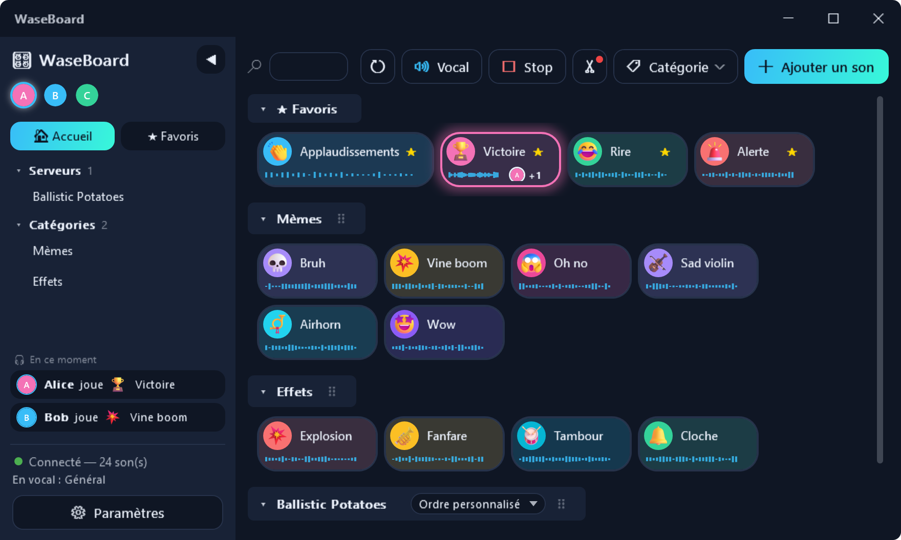
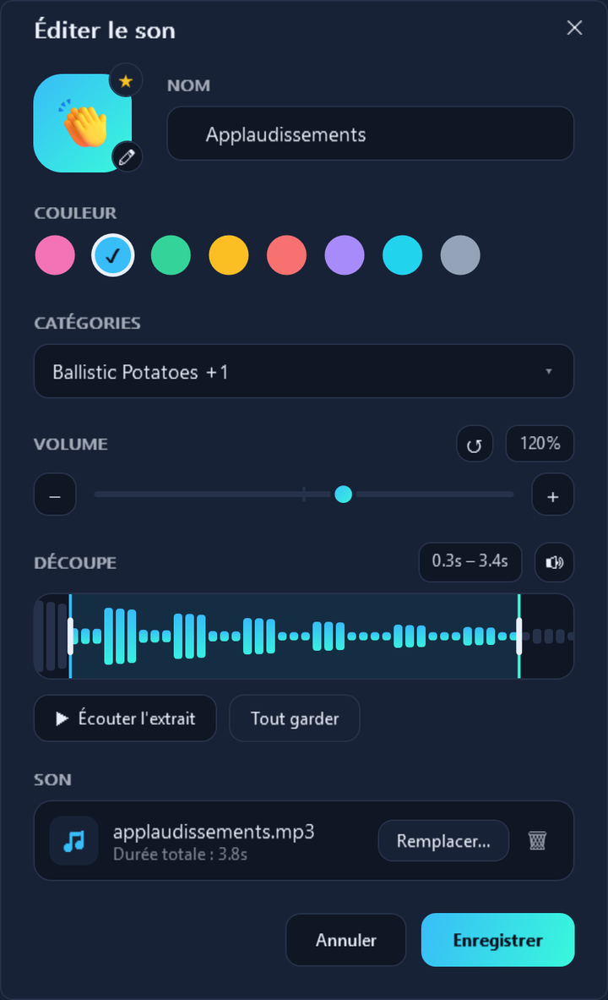

WaseBoard

🙋 You just want to use WaseBoard
The bot is almost certainly already on your Discord server:
- Download the client above
- Sign in with Discord
That's it, nothing else to type. Joining another self-hosted WaseBoard server instead? Click “Do you have your own WaseBoard server?” on first launch.

🎮 Your sounds in your games' voice chat too
With the in-game mic, your sounds go through your microphone: your teammates hear them in Valorant, CS2, Fortnite… No extra software, nothing to change in the game. A 🎮 Game / 🎧 Discord button chooses where your sounds go.
Discover the in-game mic (in French) →
A sharper client, and every sound tuned to your taste
- “Flat” theme, now the default: inset fields, gradient buttons, an icon toolbar. It is set independently of the color palette.
- “Edit sound” window (right-click › Edit): name, emoji, color, categories, favorite, trimming on the waveform.
- Per-sound volume, from 0 to 200%: the scream that is too loud goes down, the whisper comes up.
- Replace the audio file without losing the name, categories or settings.
- Buttons tinted with the chosen color, collapsible categories (▾/▸) that can be renamed with a right-click.
- The bot's “speaking” indicator finally turns off when nothing is playing.
How it works
The Discord bot and the Windows app both connect to the same place: a “WaseBoard server”, which hosts the sound catalog and links the two.
The one behind this page is public and free — no need to install one, unless you want your own.
⚡ Use the public instance
Add the bot to your Discord, download the client, sign in — that's all.
- Free, online right now
- No technical skills required
- A separate sound library for each server
🏠 Host my own server
Open source, with no central server imposed: yours, with no limit and full control over the data.
- Guided Docker assistant (~15 min)
- No ceiling: it's your machine
- Your Discord application, your data
Privacy (in French) · Terms of use (in French) · Français